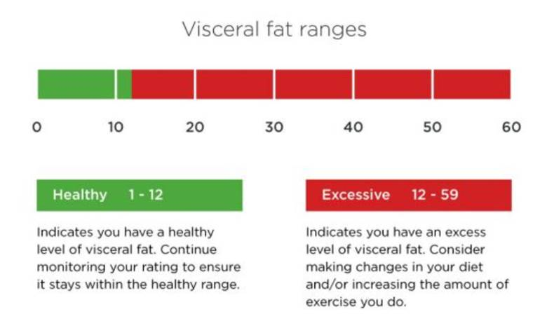
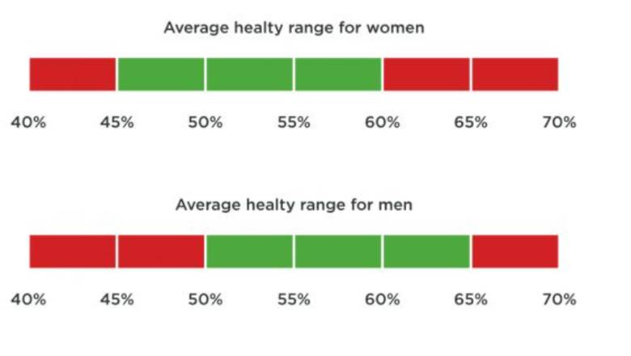
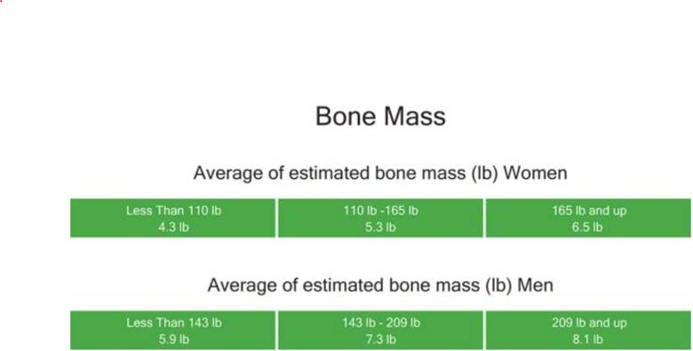
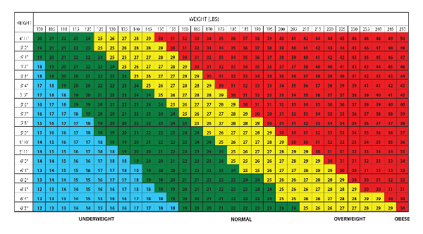

UNDERSTANDING YOUR MEASUREMENTS
BODY FAT
Body fat percentage (BFP) of a human or other living being is the total mass of fat divided by total body mass, multiplied by 100; body fat includes essential body fat and storage body fat. Essential is necessary to maintain life and reproductive functions. Body fat is essential for maintaining body temperature, cushioning joints and protecting internal organs. Weight alone doesn't give a clear idea of good health because it combines both body fat and lean body mass or muscle. Carrying too much fat is a condition called obesity, and reasons for many serious medical conditions like heart disease, diabetes, even certain forms of cancer. In fact, at least half the chronic diseases are caused by obesity.
VISCERAL FAT
Visceral fat is body fat that is stored within the abdominal cavity and is therefore stored around a number of important internal organs such as the liver, pancreas and intestines. Even if your weight and body fat remain constant, as you get older the distribution of fat changes and is more likely to shift to the abdominal area. Ensuring you have a healthy level of visceral fat directly reduces the risk of certain diseases such as heart disease, high blood pressure and may delay the onset of type 2 diabetes.
Subcutaneous Fat
Subcutaneous fat is the jiggly fat visible just under the skin. Subcutaneous fat is normally harmless and may even protect against some diseases. Visceral fat is fat that surrounds the organs. Though it is not visible from the outside, it is associated with numerous diseases.
It is possible to lose both subcutaneous and visceral fat. While subcutaneous fat loss might be the goal for people who want to fit into smaller clothes, losing visceral fat improves health.

MUSCLE MASS
The predicted weight of muscle in your body. Muscle mass includes the skeletal muscles, smooth muscles such as cardiac and digestive muscles and the water contained in these muscles. Muscles act as an engine in consuming energy.
As your muscle mass increases, the rate at which you burn energy (calories) increases which accelerates your basal metabolic rate (BMR) and helps you reduce excess body fat levels and lose weight in a healthy way.
Bone Mass
A measure of the amount of minerals (mostly calcium and phosphorous) contained in a certain volume of bone. Bone mass measurements are used to diagnose osteoporosis (a condition marked by decreased bone mass), to see how well osteoporosis treatments are working, and to predict how likely the bones are to break. Low bone mass can occur in patients treated for cancer.
BODY WATER
Body Water is the total amount of fluid in the body expressed as a percentage of total weight. Water is an essential part of staying healthy. Over half the body consists of water. It regulates body temperature and helps eliminate waste. You lose water continuously through urine, sweat and breathing, so it’s important to keep replacing it.

BONE MASS
The predicted weight of bone mineral in your body. While your bone mass is unlikely to undergo noticeable changes in the short term, it’s important to maintain healthy bones by having a balanced diet rich in calcium and by doing plenty of weight-bearing exercise.

1 pound (lb) = 0.45359237 kilograms (kg).
BASAL METABOLIC RATE (BMR)
The daily minimum level of energy or calories your body requires when at rest (including sleeping) in order to function effectively. Increasing muscle mass will speed up your basal metabolic rate (BMR). A person with a high BMR burns more calories at rest than a person with a low BMR. About 70% of calories consumed every day are used for your basal metabolism. Increasing your muscle mass helps raise your BMR, which increases the number of calories you burn and helps to decrease body fat levels.
METABOLIC AGE
Compares your BMR to an average for your age group.
This is calculated by comparing your basal metabolic rate (BMR) to the BMR average of your chronological age group. If your metabolic age is higher than your actual age, it’s an indication that you need to improve your metabolic rate. Increased exercise will build healthy muscle tissue, which in turn will improve your metabolic age. Stay on track by monitoring regularly.
BODY MASS INDEX
A standardized ratio of weight to height, used as a general indicator of health.
Your BMI can be calculated by dividing your weight (in kilograms) by the square of your height (in meters). BMI is a good general indicator for population studies but has serious limitation when assessing on an individual level.
Metabolic Age
Protein
A molecule made up of amino acids. Proteins are needed for the body to function properly. They are the basis of body structures, such as skin and hair, and of other substances such as enzymes, cytokines, and antibodies.

Cardiac Index
Cardiac index (CI) is a haemodynamic parameter that relates the cardiac output (CO) from left ventricle in one minute to body surface area (BSA), thus relating heart performance to the size of the individual. The unit of measurement is litres per minute per square metre (L/min/m2).
The normal range of cardiac index at rest is 2.6–4.2 L/min/m2.
Skeletal Muscle
Skeletal muscle, also called voluntary muscle, in vertebrates, most common of the three types of muscle in the body. Skeletal muscles are attached to bones by tendons, and they produce all the movements of body parts in relation to each other. Similar to cardiac muscle, however, skeletal muscle is striated; its long, thin, multinucleated fibres are crossed with a regular pattern of fine red and white lines, giving the muscle a distinctive appearance. Skeletal muscle fibres are bound together by connective tissue and communicate with nerves and blood vessels